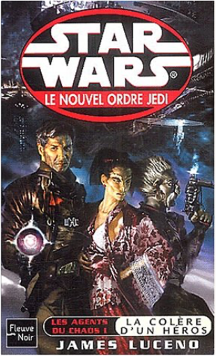
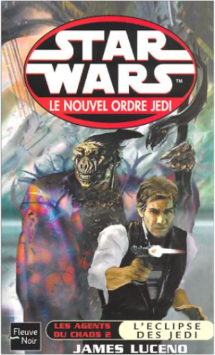
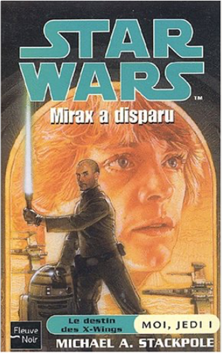
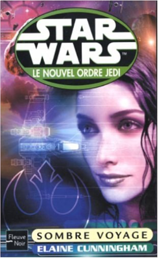

Julien
Collection Total:
1 866 Items
Last Updated:
Feb 24, 2021
Shelf:
Books
Movies
Albums
Videogames
Games
BD
BD Camille
Blu-ray
Business
Camille
Comics
Cooking
Lego
Manga
Pauline
Photography
Star Wars
Travel
TV Shows
Un livre dont vous êtes le héro
Vinyl
Walt Disney
2
3
4
5
6
star wars, tome 44 : les x-wings, partie 8, la vengeance d'isard
michael a. stackpole
2265083186

star wars, tome 45 : le nouvel ordre jedi, partie 3, les agents du chaos, partie 1, la colère d'un héros
james luceno
2265076589

star wars, tome 46 : le nouvel ordre jedi, partie 3, les agents du chaos, partie 2, l'eclipse des jedi
james luceno
2265076708
star wars, tome 47 : le nouvel ordre jedi, partie 4, point d'équilibre
cathy tyers
2265069248
star wars, tome 48 : le nouvel ordre jedi, partie 5, l'aurore de la victoire, partie 1, conquête
greg keyes
2265074950
star wars, tome 49 : épisode II, l'attaque des clones
r.a. salvatore
2265069272
star wars, tome 50 : le nouvel ordre jedi, partie 5, l'aurore de la victoire, partie 2, renaissance
greg keyes
2265069264
star wars, tome 53 : les x-wings, partie 9, les chasseurs stellaires d'adumar
aaron allston
2265076112

star wars, tome 54 : moi, un jedi, partie 1, mirax a disparu
michael a. stackpole
2265076090
star wars, tome 55 : moi, un jedi, partie 2, l'héritage de corran horn
michael a. stackpole
2265076104
star wars, tome 56 : le nouvel ordre jedi, partie 6, étoile après étoile
troy denning
2265069302

star wars, tome 57 : le nouvel ordre jedi, partie 7, sombre voyage
elaine cunningham
2265069310
star wars, tome 58 : le nouvel ordre jedi, partie 8, derrière les lignes ennemies, partie 1, le rêve rebelle
aaron allston
2265069329
star wars, tome 59 : le nouvel ordre jedi, partie 8, derrière les lignes ennemies, partie 2, la résistance rebelle
aaron allston
2265069337
2
3
4
5
6

 Made with Delicious Library
Made with Delicious Library